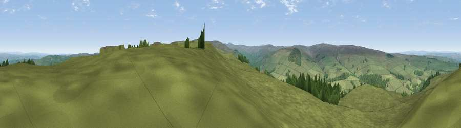

Viewpoint near Catton
#8042 in England · top 18% of its area beats it · near Catton · access?Where it is
The exact computed spot (NY 79075 55888). Click the marker for map links.
Public access: no public right of way or access land is recorded at this exact spot — it may be on private land. Computed from Natural England's CRoW access layer and OpenStreetMap rights of way — not the legal definitive map. Always verify locally.
The view, rendered

A 360° render of this exact spot computed from the terrain model, tree cover and land cover — summer colours, afternoon light, calibrated against photographs of famous viewpoints. Real trees, hedges and buildings will differ in detail.
The panorama
Grey silhouette: terrain skyline in each direction (720 bearings, Earth curvature and refraction included). Dashed green: skyline with trees (+15 m) and buildings (+8 m) as obstacles. Blue strip: how far the ground is visible on each bearing.
Where the view opens
Wedge length = distance to the farthest visible ground on that bearing (vegetation-aware). Rings at 10, 25 and 50 km.
What fills the view
93% grassland · 7% woodland
Angular shares of the visible panorama (visual magnitude), not map area. Landscape diversity 0.12 (0–1 Shannon).
Key numbers
More beautiful places nearby
The staircase of upgrades: each row has a higher view potential than everything closer. Driving times are estimates from straight-line distance, calibrated against real road routing — check an actual route before setting out.
| Place | Direction | Drive | Score |
|---|---|---|---|
| Viewpoint near Allendale | SSE · 2 km | ~5 min | 68.1 |
| Viewpoint near Allendale | SSE · 4 km | ~10 min | 70.0 |
| Viewpoint near Allenheads | SSE · 11 km | ~22 min | 74.6 |
| Grey Nag | WSW · 15 km | ~27 min | 75.7 |
| Viewpoint near Renwick | SW · 19 km | ~32 min | 77.0 |
| Viewpoint near Cumrew | WSW · 21 km | ~36 min | 77.2 |
| Viewpoint near Melmerby | SW · 23 km | ~37 min | 78.1 |
| Viewpoint near Cumrew | W · 23 km | ~38 min | 78.8 |
54.89728, -2.32780 · source: screening · position refined by local search. Computed location — check access rights before visiting.